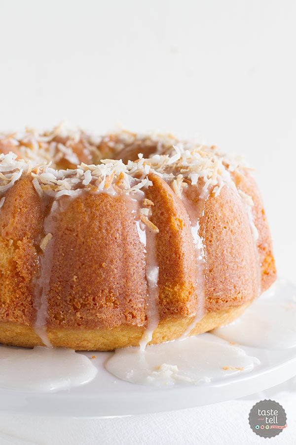
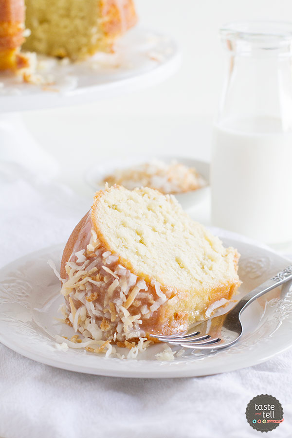
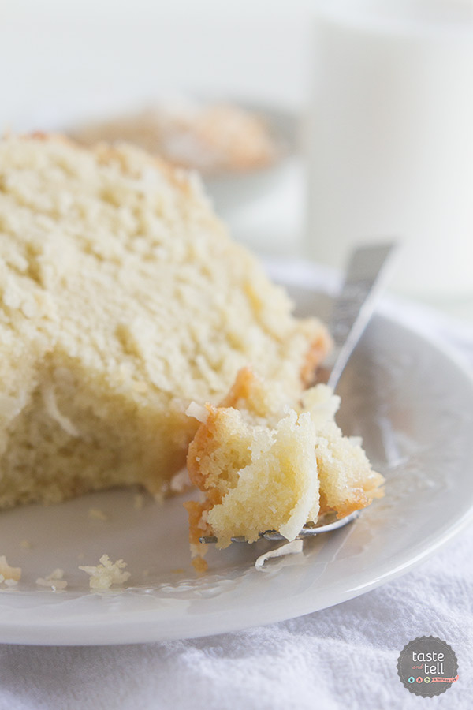

Date added: 05 Jan
I don’t know what it is about bundt cakes, but it seems like just about everyone loves them. I think it’s because they aren’t intimidating like a layer cake would be. They remind me of something you’d whip up on a Sunday night to take to grandma’s house.

As much as I love a a good layer cake or a beautiful cupcake, I’m always drawn towards the bundt cakes.
Which is why I am super happy to be sharing this recipe today, courtesy of a new ebook by Sommer from A Spicy Perspective – Brilliant Bundt Cakes. I was so excited when Sommer released this ebook, as my bundt pan doesn’t get enough use, and I knew this ebook would get that pan on a regular rotation.
Brilliant Bundt Cakes is filled with 25 bundt cake recipes – perfect for any occasion. And it doesn’t stop there – you also get 10 topping recipes (for things like Fresh Blueberry Sauce or Creamy Peanut Butter Sauce) – recipes sure to add something special to your bundt cake.

I loved the array of recipes in this book, and honestly changed my mind multiple times when I was trying to decide what to make. I have a thing for coconut (especially lately) so it should be no surprise that I ended up going with this coconut bundt cake.
And let me tell you – I was very happy with my choice.
This cake is everything that I expect for a bundt cake. A moist cake with a dense yet tender crumb, this coconut bundt cake has the perfect amount of coconut flavors running through it. And the glaze!! I’ll admit that I’m that person who goes crazy over a simple glaze, and will dip my finger into the puddles of glaze that drip from the cake. (Don’t judge – you know you do it, too.) This glaze is so simple, but it brings such great coconut flavor to this cake. My kids aren’t coconut fans (the horror!!) but they still enjoyed this cake, minus the shredded coconut on top. But my husband and I were huge fans, finishing off more of this cake than I care to admit. I had planned on saving a slice or two and then finding a neighbor to pawn the rest off onto, but well, that didn’t happen. ⌣
I would completely recommend this ebook to everyone. And the timing is perfect, as I’m sure you are still looking for desserts for holiday parties or even for your big holiday meal. And right now, Brilliant Bundt Cakes is only $2.99. You can’t beat a deal like that!!


